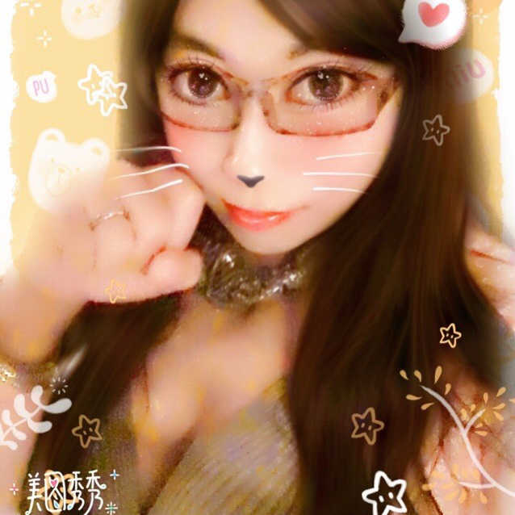
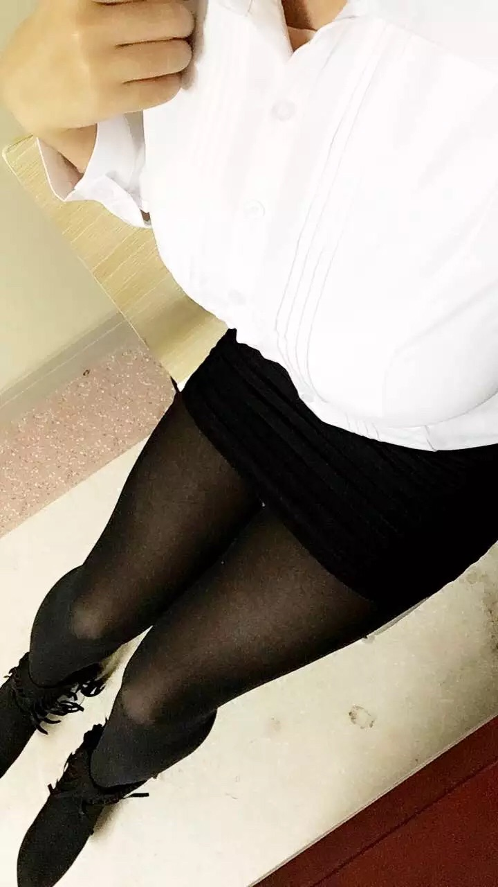
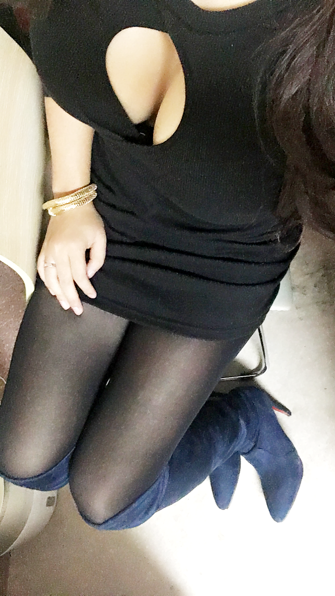
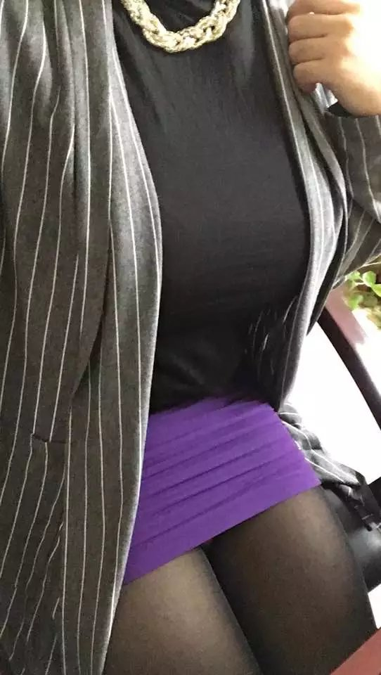

名字:
形单影只
性别:女

介绍:专家级键盘奴
问题
答案
新建于:2016-11-30 12:50:35 PM，更新于2016-11-30 12:52:13 PM
Pre上一页
Next下一页
跳页:
正文: 自己是个包臀控…因为如果不包就更显得大…是巨大好么～
显然对于胖妹汉…想要小清新已经尝试多次，然而现实总是很残酷的告诉我，你丫不是良家，好好骚别控制

这是我们单位的工装…裙子是黑色的就可以，我果断选择黑包～黑丝长腿配包臀裙是最般配的～
日常中，我比较喜欢连衣的包臀设计，因为我个子高，如果下面包臀上面穿很多会让人觉得像坚果墙 
走光是肯定的～长腿叔叔伤不起啊……所以姐妹们一定要穿安全裤哦，或者穿个长外套遮一下～

答题完毕，请勿拍砖
Pre上一页
Next下一页
跳页: